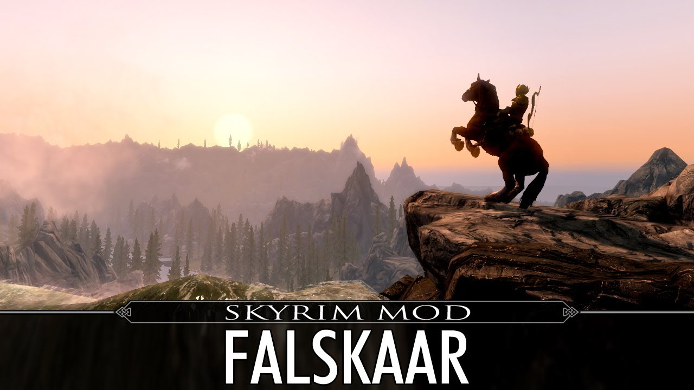
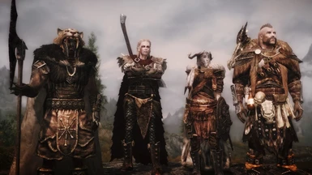
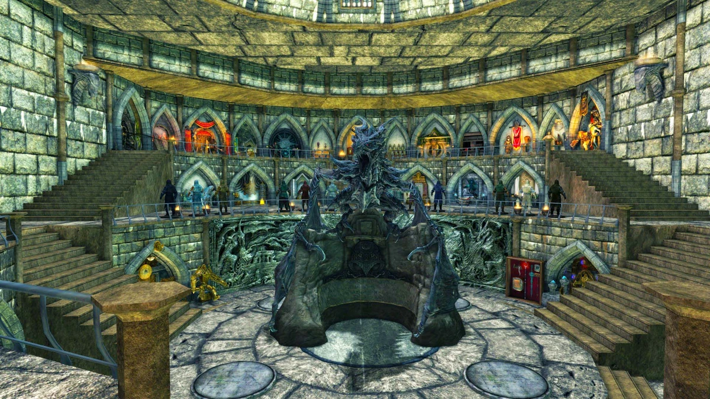

| Nombre del Mod | Descripción |
|---|---|
| Falskaar  |
Falskaar es un mod de expansión que añade una nueva tierra del tamaño de Dawnguard o Dragonborn. Cuenta con una nueva campaña con más de 20 horas de contenido, voces totalmente dobladas y una nueva banda sonora. Explora nuevas mazmorras, conoce nuevos personajes y sumérgete en una emocionante nueva historia. |
| Immersive Armors  |
Immersive Armors es un mod que agrega una gran cantidad de nuevas armaduras al juego, mejorando la variedad y la inmersión. Desde armaduras ligeras hasta pesadas, este mod añade una amplia selección de conjuntos de armaduras diseñados con gran detalle y calidad. Cada conjunto tiene su propio aspecto único y puede ser personalizado para adaptarse a tu estilo de juego. |
| Ordinator - Perks of Skyrim |
Ordinator - Perks of Skyrim es un mod que revoluciona el árbol de habilidades del juego con más de 400 nuevas y únicas habilidades. Este mod ofrece una experiencia de progresión más variada y emocionante, permitiéndote personalizar aún más tu personaje y desbloquear poderosas habilidades especiales. Desde combate hasta magia y sigilo, Ordinator ofrece una gran cantidad de opciones para personalizar tu juego. |
| Legacy of the Dragonborn  |
Legacy of the Dragonborn es un mod expansivo que añade una galería de artefactos, una nueva historia y una gran cantidad de contenido coleccionable. Sumérgete en una nueva aventura mientras investigas misteriosos artefactos y desentrañas una historia épica que te llevará a través de Skyrim y más allá. Con nuevas misiones, ubicaciones y objetos coleccionables, Legacy of the Dragonborn ofrece horas de juego adicional y una experiencia única de Skyrim. |